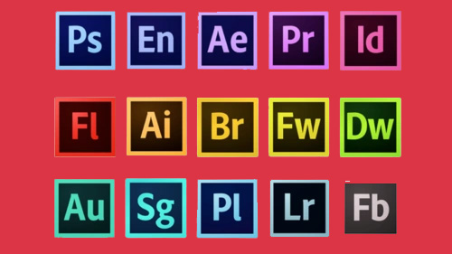

Media Production
This course can be taken during the spring semester where students will learn the basics of various media creation techniques. After learning the laws of copyright and how to avoid plagiarism,
students will complete units on Video production using Flip Grid, Screen Cast, and WeVideo. Other units include using Adobe Spark and Adobe photoshop to create memes, collages, postcards,
and more!
Video Editing
Students will learn how to use Flip Grid, Screen-Cast, and We Video to create, edit, and share videos. Projects that are completed during this unit include a Flip Grid video that students
answer a question and then respond to three of their fellow classmate's responses. Screen-Cast will see students explaining how to use a feature of their computer through casting from their
Chromebook screen. Then, there will be two more projects using WeVideo where students will create a green screen montage of themselves with different background images, and a short documentary
on a chosen topic.


Photo Editing
The last subject of Media Production is all about photo editing. Students will learn how to use Adobe Spark and Adobe Photoshop to create collages, combining photos, and create a postcard.
After learning basic concepts of photo editing, students will expand their knowledge by creating compositions and utilizing typography. To cap off the semester, students will finish their Media
Production semester with a project based around a senior of their choosing.